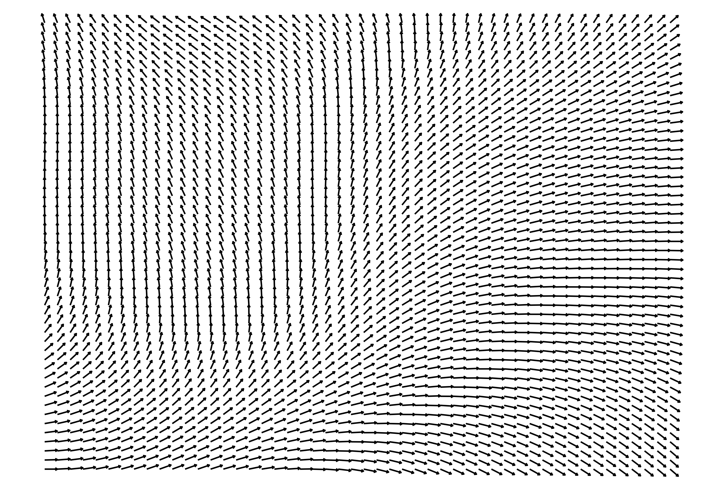
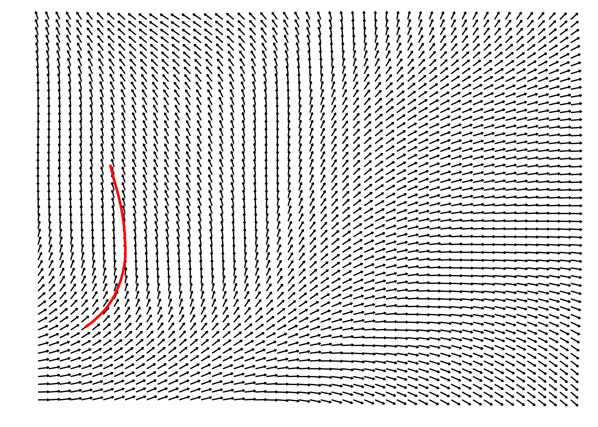
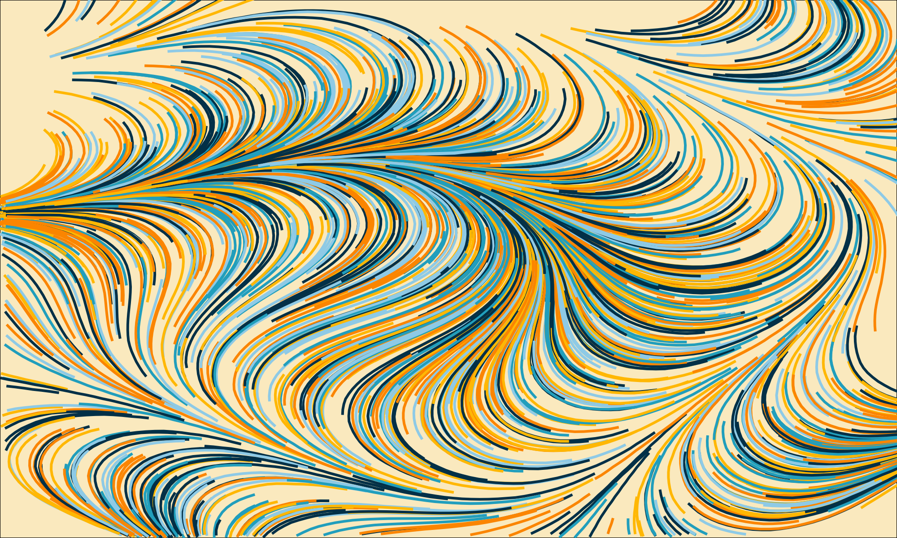
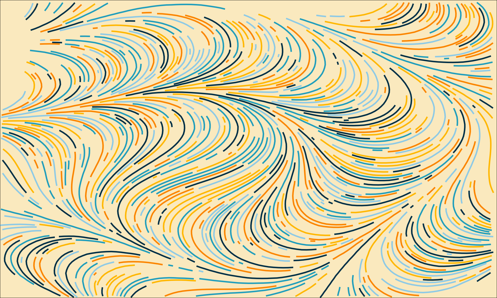
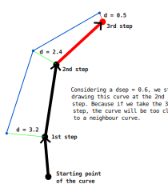
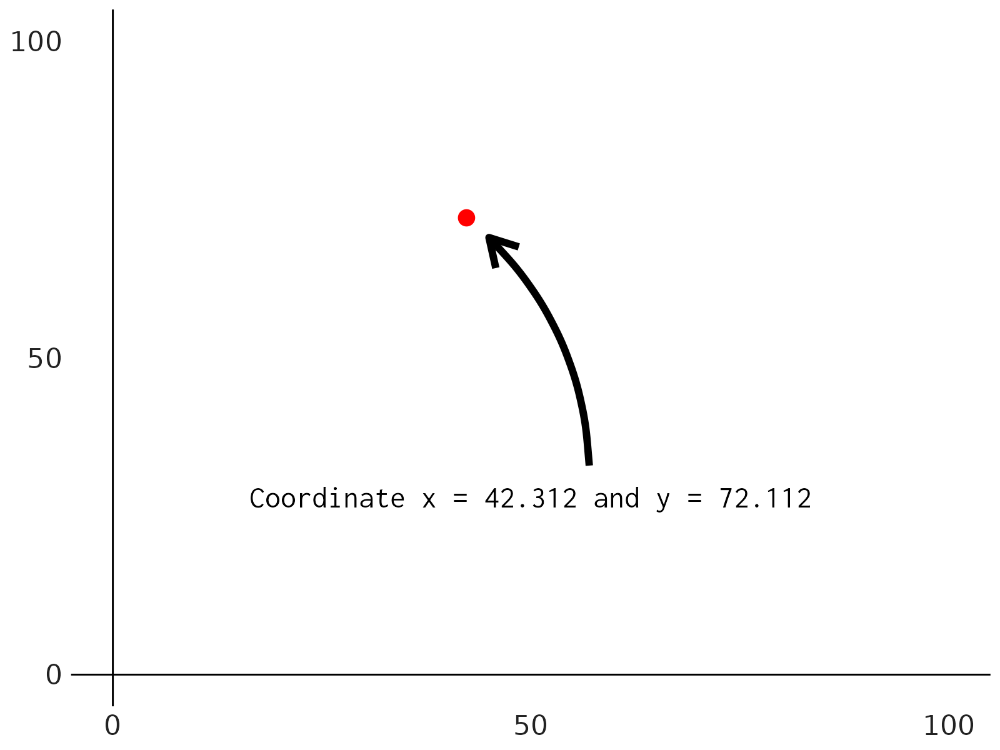
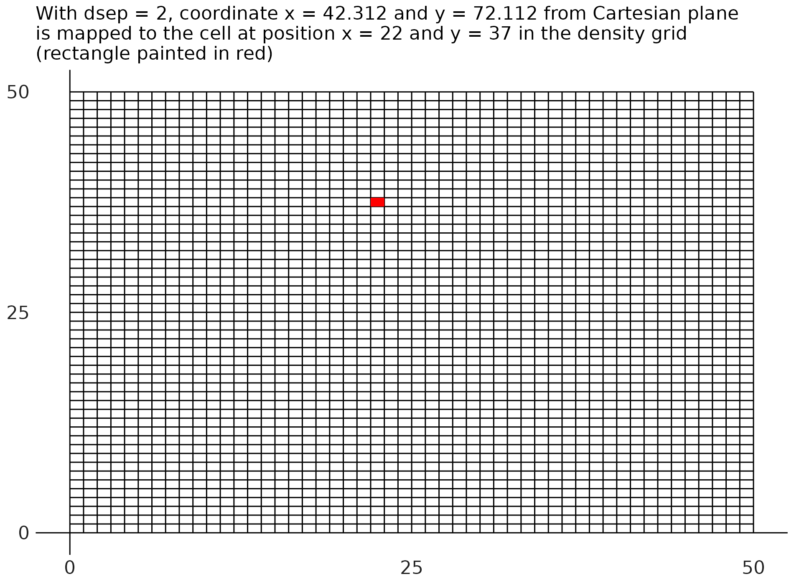
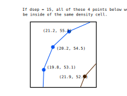
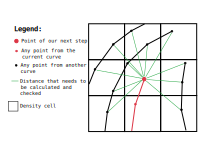

1 Introduction
I’m currently writing a book about R and Graphics (stay tuned for more news about this book soon 😉). During my research for this book, I had to study a relatively famous and established algorithm, called as the Jobard-Lefer algorithm. It is an algorithm for producing evenly spaced curves in a flow field (or a vector field). This algorithm is thoroughly described in a scientific paper (Jobard and Lefer 1997).
In this article, I want to describe how you can implement this algorithm in C. These are the topics we are going to discuss:
- What are flow fields (or vector fields)?
- How to draw curves in a flow field?
- What the algorithm does?
- How does it work?
- How to implement it in C?
2 What are flow fields (or vector fields)?
A flow field (which is also called a vector field in some ocasions) is essentially a field (or a two-dimensional grid) of angles. Figure 1 shows an example of a flow field:
In more details, a flow field is usually represented as a 2D (two-dimensional) grid, or a 2D matrix of angle values. So each element in this matrix is a real number, and this real number is interpretd as an angle value (in the radians scale). This 2D matrix of angle values is usually produced by a Perlin Noise algorithm (Wikipedia 2024a), or a similar algorithm, like the Simplex Noise algorithm (Wikipedia 2024b).
In other words, the numbers in the 2D matrix are normally random numbers. But you cannot use any random number generator to produce them. You must use a 2D (or two-dimensional) noise algorithm to produce these random numbers.
Just to give you a very brief example, you can build a flow field in C, by using the FastNoiseLite library. In this library, you have multiple algorithms you can use for producing two-dimensional noise.
Despite the many options, I will use as an example in this article, the classic Perlin Noise algorithm for producing the flow field. You can see in the snippet below that I am building a flow field with 120 of width and height. In other words, we have a 120x120 grid of angle values.
#include <math.h>
#include <stdlib.h>
#define FNL_IMPL
#include "FastNoiseLite.h"
#define FLOW_FIELD_WIDTH 120
#define FLOW_FIELD_HEIGHT 120
int main() {
double flow_field[FLOW_FIELD_WIDTH][FLOW_FIELD_HEIGHT];
// Create and configure noise state
fnl_state noise = fnlCreateState();
noise.seed = 50;
noise.noise_type = FNL_NOISE_PERLIN;
int index = 0;
for (int y = 0; y < FLOW_FIELD_HEIGHT; y++) {
for (int x = 0; x < FLOW_FIELD_WIDTH; x++) {
// Scale each value to the radians scale by
// multiplying each value by 2PI.
flow_field[x][y] = fnlGetNoise2D(&noise, x, y) * 2 * M_PI;
}
}
}3 How to draw curves in a flow field?
Flow fields have multiple applications in computer graphics. For example, you can use them to draw interesting (or “very pleasing looking”) curves.
The basic idea is to draw a curve by walking across the flow field. First, we choose a point in the flow field as our starting point, and then, we start to walking by following the direction of the angles we encounter in the flow field. As we walk trough the flow field, we record the x and y coordinates of our positions. When we finish walking, we can draw a curve by “connecting the dots”, i.e. connecting the points (x and y coordinates) that we passed through.
So, in essence, the steps for drawing a curve in a flow field are:
- Choose a starting point in the grid.
- Look at the angle that is stored in the position of the grid that you are currently in.
- Take a step in the direction of that angle.
- Recalculate your current position in the grid, and record/store this position for later use.
- Comeback to step 2.
You can see in the bullet points above that, we begin a loop at step 5. We are repeatedly taking a step in the direction of an angle, recalculating our current position in the flow field, and taking another step in the direction of another angle. As long as we stay inside the boundaries of the flow field, we can repeat this pattern as much as we want to.
The Figure 2 below shows the end result of this process. In this example, we begin in coordinate \((5, 10)\), i.e. \(x = 5\) and \(y = 10\), in the field, and take 45 sequential steps in the field by following the direction of the angles we encounter in the way. The curve painted in red shows the end result of this “walking process”.

As you walk trough the flow field, the angle that you currently using might lead you to a position that is off the boundaries of the flow field. In that case, you should stop walking, before you go off the flow field. Because if you pass the boundaries of the flow field, then, the lookup process we perform to take an angle in the flow field, will fail.
Two important variables need to be defined to draw your curve:
- The number of steps you want to take.
- The distance of each step (or “step length”).
First is the number of steps you want to take in your walk. You can definetly set this to infinity, so you walk indefinitely until you hit one of the boundaries of the flow field. But you normally do not want to walk indefinitely. Because this usually produces a very long curve that goes across the entire flow field.
Yes! You might want to draw a very long curve. As you probably notice, this is very subjective to each person and their objective. But for the most part, you usually do not have to set this number of steps too much high. Around 30-40 steps is a good range for those who doesn’t know what they want.
Therefore, the number of steps directly affects the length of the curve that you are drawing. If you take a high number for steps , the curve will be longer. In contrast, if you take just few steps, your curve will be shorter.
Second is the distance you will take in each step (let’s call it as the “step length”). The step length affects how “sharp” the curve looks. If you set the step length correctly, the curve will look nice, very “curvy”. In other words, the curve will look like an actual curve. But if you set the step length too high, then, the “connect the dots” effects will be much more appearant. In other words, your curve will not look like a curve, and more like an attempt to draw a polygon with very sharp edges.
But be careful to also not set the step length too low. If you set it very very low, then, you will end up affecting the length of the curve as well. Because the step length is soo low, that even if you set the number of steps very high, you still get a very short curve as a result. This is bad because you will be tempted to raise the number of steps even higher, and by setting the number of steps too high, you end up increasing the overhead and computing time of the algorithm.
I mean, increasing the number of steps from 10 to 1000 for drawing a single curve into the field is fine. But when you raise the number of steps to 1000 when you are drawing like 10000 curves into field, then you will notice the overhead very quickly. So, if you want your algorithm to perform well, and still get nice and visually attractive curves in the output, you usually want to set the step length to a number that is in the range from 0.1% to 1% of the flow field width.
In C, you can represent a curve with the struct Curve below. You can see below that I am dynamically allocating space to store the x and y coordinates that compose this curve.
#define N_STEPS 30
struct Curve {
int id;
double* x;
double* y;
} typedef Curve;
Curve curve;
curve.id = 0;
curve.x = malloc(N_STEPS * sizeof(double));
curve.y = malloc(N_STEPS * sizeof(double));Also, the C snippet below translates the steps I described above to draw a curve into the field. You can see in this code that our current position in the Cartesian plane is mapped to a specific position in the flow field, or, in other words, to a position in the 2D matrix of angles, by transforming our current x and y positions into integers.
So for example, if our current position in the Cartesian plane is \(x = 45.289\) and \(y = 21.556\), then, our current position in the flow field is \(x = 45\) and \(y = 21\). So, the current angle that we need to retrieve and use from the flow field, is the angle that is stored in the element angles[45][21] of the matrix.
#define STEP_LENGTH 0.01 * FLOW_FIELD_WIDTH
int off_boundaries (double x, double y, int limit) {
return (
x <= 0 ||
y <= 0 ||
x >= limit ||
y >= limit
);
}
for (int i = 0; i < N_STEPS; i++) {
int ff_column_index = (int) floor(x);
int ff_row_index = (int) floor(y);
if (off_boundaries(ff_column_index, ff_row_index, FLOW_FIELD_WIDTH)) {
break;
}
double angle = flow_field[ff_row_index][ff_column_index];
double x_step = STEP_LENGTH * cos(angle);
double y_step = STEP_LENGTH * sin(angle);
x = x + x_step;
y = y + y_step;
curve.x[i] = x;
curve.y[i] = y;
}Furthermore, this C code uses a pair of equations from geometry (Equation 1 and Equation 2) to calculate the new x and y coordinates after I take the step by following the direction of the current angle. These equations are normally used to calculate the coordinates in the circumference of a circle centered at the origin point of the Cartesian plane, and they are exposed below.
Given that a circle that is centered at the origin point of the Cartesian plane, and that \(r\) is the radius of the circle, and that \(A\) is the angle, in radians, that identifies the position in the circumference that you are trying to calculate it’s coordinates, you can calculate the x (\(x'\)) and y (\(y'\)) coordinates of the corresponding position in the circumference by using the following pair of equations:
\[ x'=r\times \cos(A) \tag{1}\]
\[ y'=r\times \sin(A) \tag{2}\]
4 The Jobard-Lefer algorithm
When you start to draw multiple curves in the flow field, without caring where these curves are placed and where they go, eventually, you will end up with a very dense image, with many curves overlapping each other. Some people are intentionally trying to produce such dense images, because they want the interesting depth effect that these images normally have around the curves.
But sometimes, you are really trying to avoid that. Sometimes, you want to meet all of these criterias below at the same time:
- draw a high number of curves (i.e. a number that is high enough to “fill” the image) in the field.
- draw only non-overlapping curves.
- draw curves that are “evenly-spaced” between each other.
Jobard and Lefer (1997) proposes an algorithm that produces non-overlapping and evenly-spaced curves around a flow field. If you read the paper carefully, you might notice that you can divide this algorithm into two separate parts. Splitting this algorithm into two separate is very useful for the objective of this article. Because is easier to explain how each part works separately, than to trying to explain the entire algorithm at once.
These two parts are:
- An algorithm to draw non-overlapping curves.
- An algorithm to select new start points for new curves.
First, I will focus on the first part of the algorithm, and, after explaining how this first part works, it will be a little easier for you to understand how the second part works.
5 Drawing non-overlapping curves
This first part of the algorithm is the part that makes sure that only non-overlapping curves are drawn to the field. The idea behind it, is that we are constantly checking the distances between our next position and the other curves around us. We want to always make sure that the current curve is far enough from the other curves, and, if not, stop drawing this curve.
This specific part of the algorithm works around a constant value, that represents the minimum distance allowed between two curves. Jobard and Lefer (1997) call this value as \(d_{sep}\), or, as the “separating distance”. The end result of the algorithm is that any point in any curve in the field is, at least, at a distance of \(d_{sep}\) units from any other point from another curve in the field.
If you use this part of the algorithm, you normally produce some very nice and “pleasing to the eyes” type of images. At Figure 3, I am showing the difference that this part of the algorithm makes to the image. In both subfigures, we used the same colors for each curve, the same starting points for each curve, the same step length, the same number of steps, same flow field, etc. Anymway, all the configs used in both images are literally the same. The only difference between these two images, is the use (or not) of this “non-overlaping” curve algorithm.
In the first image (without the Jobard-Lefer algorithm) I simply drawn the curves using the steps I described at Section 3, without caring if the curves were overlapping (or, if they were too close to) each other. In contrast, in the second image, I used the first part of the Jobard-Lefer algorithm to draw the curves while checking if they were overlapping (or, if they were too close to) each other.


5.1 How this part of the algorithm works?
In essence, at each step we take while drawing our curve, we look at the curves that are around us, and we compare the distance between our next step and all of these neighboring curves. If this distance between is lower or equal to the separating value (\(d_{sep}\)), then, we do not take the next step, and we stop drawing the current line.
Notice that we are still using the exact same steps I described at Section 3 to draw the curves into the field. We are still start with a starting point, then, we start to take sequential steps by following the direction of the angles we encounter through the field.
However, the key difference here, is that we added a new step, or new check to these previous steps. Now, while we are walking through the field, we are constantly calculating distances, and checking these distances to make sure that we are not too close to a neighbour curve.
Figure 4 demonstrates this process visually. And I know what you are thinking! “These curves in Figure 4 doesn’t look like curves!”. Just remember the steps I described at Section 3. We are essentially drawing curves by connecting the positions where we walked through. Is like I applied a very big zoom over the image while the algorithm is actively drawing the curves.
So, at a very low scale, the curves we are drawing are not really curves at all. But at a normal scale, when we zoom out of the image, and look to the image with our own human eyes, the steps are so small, so small, that we cannot perceive the connected dots. The curve effectivelly looks very much like a nice and fluid curve.
In the example of Figure 4, we have one already existing curve (in blue), and we are currently drawing a second curve into the field. At each step, we calculate the coordinates of the next step we need to make, them, we compare the distance between the position of this next step, and the points from other curves that are close by. If this distance between this next step and any point from the surrounding curves is lower or equal than \(d_{sep}\), we “cancel” the next step, and we stop drawing the current curve.

To calculate the distance between two points in the Cartesian plane, we use another equation from geometry, which is commonly know as the “distance formula”:
\[ d = \sqrt{[(x_2 - x_1)^2 + (y_2 - y_1)^2]} \tag{3}\]
The function distance() below translates this Equation 3 into a C function.
double distance (double x1, double y1, double x2, double y2) {
double s1 = pow(x2 - x1, 2.0);
double s2 = pow(y2 - y1, 2.0);
return sqrt(s1 + s2);
}5.2 The density grid
I think this specific section of the paper is a little confusing. But if I did understand the authors correctly, then, at each step we take in the field, the Jobard-Lefer algorithm takes the coordinate of out next step, and calculates the distance between this point and all of the points that are near by and that belongs to others (already existing) curves.
To find the points that are near by, the algorithm uses a second Cartesian grid that is superposed over the Cartesian plane that our flow field lives. In other words, it uses a second Cartesian plane that uses a different scale, accordingly to the “separating distance” (\(d_{sep}\)). Jobard and Lefer (1997) call this second Cartesian grid as the “density grid”.
So every coordinate in the Cartesian plane can be mapped to a specific position in the density grid. You do that by scaling the x and y coordinates in the Cartesian to fit the scale used in the density grid. As an example, let’s consider a Cartesian plane that is 100x100.
For example, if you have an x and y coordinates in the flow field, and you want to calculate the corresponding position in the density grid for this specific coordinate, you can use the functions get_density_col() and get_density_row() exposed below:
int get_density_col (double x, double d_sep) {
double c = (x / d_sep) + 1;
return (int) c;
}
int get_density_row (double y, double d_sep) {
double r = (y / d_sep) + 1;
return (int) r;
}At Figure 5, we are using as an example, a Cartesian plane with dimensions 100x100. With \(d_{sep} = 2\), the corresponding density grid becomes a Cartesian grid with dimensions 50x50. You can see at Figure 5 (b) that, the density grid is a grid of \(50 \times 50 = 2500\) cells. Each cell have width and height equal to \(d_{sep}\). In Jobard and Lefer (1997) paper, these cells are called “density cells”.
The functions get_density_col() and get_density_row() always return an integer value as output. Because they calculate the coordinates of the density cell in which the original coordinate in the Cartesian plane is mapped to.
So a single cell in the density grid can contain multiple points from the Cartesian plane where the flow field lives. Or, on the other side, you can say that multiple points in the Cartesian plane can be mapped to the same cell in the density grid.
In the example of Figure 5, the coordinate \(x = 42.312\) and \(y = 72.112\) is mapped to the cell at position \(x = 22\) and \(y = 37\) in the density grid.


Each cell in the density grid should store a collection of pointers. Each pointer points to a specific point in the flow field that belongs to a curve drawn in the field, and that is mapped to that specific cell.
As an example, let’s suppose we are using a 100x100 flow field, and that we already drawn two curves in the field, curve A and curve B. Because we configured the number of steps to 30, each curve have approximatelly 30 different points.
But let’s focus our example on 4 specific points. One specific point (of these 4) belongs to curve B. While the remaining 3 points (of the 4) belongs to curve A. Let’s suppose these points are the following x and y coordinates:
- \(x = 21.2, y = 55.5\) (Curve A);
- \(x = 20.2, y = 54.5\) (Curve A);
- \(x = 19.8, y = 53.1\) (Curve A);
- \(x = 21.9, y = 52.9\) (Curve B);
If we set \(d_{sep}\) to 15, then, all of these 4 points will be mapped into the same density cell at position \(x = 2\) and \(y = 4\) of the density grid. Figure 6 presents this idea visually.

As a consequence, the density cell at position \(x = 2\) and \(y = 4\) of the density grid, should store 4 pointers. Each pointer will point to one of these 4 coordinates that we described above. Because each of these coordinates in the flow field were mapped to this particular density cell.
A density grid can be represented in C as a two dimensional array, where each element of this array is a density cell object. The struct DensityCell below represents a density cell.
Notice that, I am dynamically allocating memory on the heap, with malloc(), for reserving space to store the values for each (x and y) coordinates that will be mapped to this density cell. Since this is a dynamically allocated memory, we need to remember to free this memory later, when we are done with it.
To start, I am allocation space for 14000 x and y coordinates in each density cell with malloc(). This value might be too high, or might be too low. Is hard to predict the number of coordinates that will be stored inside this density cell.
Because of that, it might be a good idea to transform these x and y arrays inside the density cell into growable arrays, instead of using fixed sized arrays. But for now, I don’t care about that, I don’t need this work now, I just want to write a version of the algorithm that works.
#define D_SEP 0.8
#define DENSITY_GRID_WIDTH ((int) (FLOW_FIELD_WIDTH / D_SEP))
struct DensityCell {
double* x;
double* y;
int space_used;
int capacity;
} typedef DensityCell;
DensityCell density_grid[DENSITY_GRID_WIDTH][DENSITY_GRID_WIDTH];
int density_capacity = 14000;
for (int y = 0; y < DENSITY_GRID_WIDTH; y++) {
for (int x = 0; x < DENSITY_GRID_WIDTH; x++) {
density_grid[x][y].space_used = 0;
density_grid[x][y].capacity = density_capacity;
density_grid[x][y].x = malloc(density_capacity * sizeof(double));
density_grid[x][y].y = malloc(density_capacity * sizeof(double));
}
}Now, given that you have a coordinate in the flow field, how to do you store this coordinate inside the density grid? The function insert_coord_in_density_grid() below summarises this process.
First, we calculate the coordinate of the density cell that is mapped to this particular coordinate. We check if we are inside the boundaries of the density grid. Then, we look at the density cell found, and check if we have enough space to add this one coordinate to the density cell. If we do have space, then, we simply add this coordinate to the x and y arrays that are inside this DensityCell object.
void insert_coord_in_density_grid (double x,
double y,
double d_sep,
DensityCell density_grid[DENSITY_GRID_WIDTH][DENSITY_GRID_WIDTH]) {
int density_col = get_density_col(x, d_sep);
int density_row = get_density_row(y, d_sep);
if (off_boundaries(density_col, density_row, DENSITY_GRID_WIDTH)) {
return;
}
int space_used = density_grid[density_col][density_row].space_used;
int capacity = density_grid[density_col][density_row].capacity;
if ((space_used + 1) < capacity) {
density_grid[density_col][density_row].x[space_used] = x;
density_grid[density_col][density_row].y[space_used] = y;
density_grid[density_col][density_row].space_used = space_used + 1;
} else {
printf("[ERROR]: Attempt to add coordinate in density cell that is out of capacity!\n");
}
}5.3 Searching for points near by
We use the density grid to find all points from another curves that are near by our next move in the flow field. That is essentially the main purpose of the density grid. To help us finding which points are near by our next move in the flow field.
In essence, at each step we take in the flow field, we need to calculate the position of the density cell that is mapped to our next move. By identifying which cell in the density grid we are mapped to, we can look at the pointers that are already stored inside this specific density cell to find which points are near by.
Actually, the algortihm from Jobard and Lefer (1997) looks not only at the specific cell that is mapped to our next move, but it also looks at the 8 density cells that are surrounding this current cell.
You can see at Figure 7 a representation of this process.

5.4 Checking if our next step is valid
So, in summary, we need to check if our next step, is a valid step, before we take it. If the step is not valid, we should “cancel” the next step, and stop drawing the current curve.
But how to check if this next step is valid. The function is_valid_step() below summarises this process. This function returns a boolean value, 1 for true and 0 for false.
First, we find which density cell is mapped to the coordinates of this next step. Then, we need to calculate the coordinates of the surrounding density cells, as I showed at Figure 7.
Having the coordinates of density cells we need to pass through, we use then, calculate the distance between our next step and each point stored in each density cell, and check if any of these distances are less or equal than \(d_{sep}\).
int is_valid_step (double x, double y,
double d_sep,
int density_grid_width,
DensityCell density_grid[DENSITY_GRID_WIDTH][DENSITY_GRID_WIDTH]) {
int density_col = get_density_col(x, d_sep);
int density_row = get_density_row(y, d_sep);
if (off_boundaries(density_col, density_row, DENSITY_GRID_WIDTH)) {
return 0;
}
int start_row = (density_row - 1) > 0 ? density_row - 1 : 0;
int end_row = (density_row + 1) < density_grid_width ? density_row + 1 : density_row;
int start_col = (density_col - 1) > 0 ? density_col - 1 : 0;
int end_col = (density_col + 1) < density_grid_width ? density_col + 1 : density_col;
for (int c = start_col; c <= end_col; c++) {
for (int r = start_row; r <= end_row; r++) {
int n_elements = density_grid[c][r].space_used;
if (n_elements == 0) {
continue;
}
for (int i = 0; i < n_elements; i++) {
double x2 = density_grid[c][r].x[i];
double y2 = density_grid[c][r].y[i];
double dist = distance(x, y, x2, y2);
if (dist <= d_sep) {
return 0;
}
}
}
}
return 1;
}5.5 Drawing the curves
Now, the final piece of the alorithm. How can you draw non-overlaping curves? Actually, all we need to do, is to add two more steps to the same steps we described at Section 3.
If you look at the C code below, you can see that we now have a main for loop, that draws a single curve per iteration. Now, the first inner loop is the exact same for loop we presented at Section 3, with essentially the same steps, with only one difference.
We now have a if statement to check the result of is_valid_next_step(). If the function returns true, then, the next step we are trying to take is valid, so we go on with our lives, and we go to the next iteration.
However, if the function returns false (0), then, it means that the next step is not valid (i.e. it is too close to a neighboring curve), and because of that, we run a break statement to drawing the current curve. Then, we comeback to the main and outer loop, and we start to draw the next curve in the field.
Curve* curves = malloc(N_CURVES * sizeof(Curve));
for (int i = 0; i < N_CURVES; i++) {
curves[i].x = malloc(N_STEPS * sizeof(double));
curves[i].y = malloc(N_STEPS * sizeof(double));
}
for (int curve_id = 0; curve_id < N_CURVES; curve_id++) {
double x = start_points[curve_id].x;
double y = start_points[curve_id].y;
curves[curve_id].id = curve_id;
for (int i = 0; i < N_STEPS; i++) {
int ff_column_index = (int) floor(x);
int ff_row_index = (int) floor(y);
if (off_boundaries(ff_column_index, ff_row_index, FLOW_FIELD_WIDTH)) {
break;
}
double angle = flow_field[ff_row_index][ff_column_index];
double x_step = STEP_LENGTH * cos(angle);
double y_step = STEP_LENGTH * sin(angle);
x = x + x_step;
y = y + y_step;
int valid = is_valid_next_step(
x, y,
D_SEP,
DENSITY_GRID_WIDTH,
density_grid
);
if (!valid) {
// This next step is not valid, stop drawing current curve
// and jump to start drawing next curve.
break;
}
curves[curve_id].x[i] = x;
curves[curve_id].y[i] = y;
}
// After we finish calculating the coordinates of a curve,
// we add the coordinates of this curve to the density grid.
for (int i = 0; i < N_STEPS; i++) {
double x = curves[curve_id].x[i];
double y = curves[curve_id].y[i];
insert_coord_in_density_grid(x, y, D_SEP, density_grid);
}
}5.6 The full algorithm
After I explained each individual part of the algorithm, is finally time to see the entire piece. But, just for brevity reasons, and to save space in this article, I will not show the entire algorithm here. Instead, I will give you a link to GitHub, where you can read the source code peacefully.
Link to the entire algorithm: https://github.com/pedropark99/Personal-website/blob/main/posts/2024/2024-02-19-flow-even/src/non_overlap_curves.c
References
Jobard, Bruno, and Wilfrid Lefer. 1997. “Creating Evenly-Spaced Streamlines of Arbitrary Density.” In Visualization in Scientific Computing ’97, edited by Wilfrid Lefer and Michel Grave, 43–55. Vienna: Springer Vienna.
Wikipedia. 2024a. “Perlin Noise.” https://en.wikipedia.org/wiki/Perlin_noise.
———. 2024b. “Simplex Noise.” https://en.wikipedia.org/wiki/Simplex_noise.